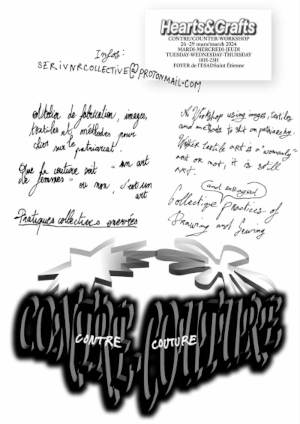
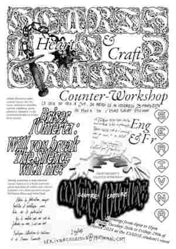
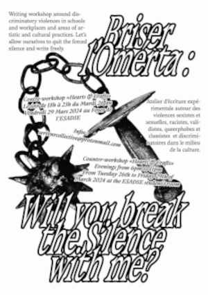
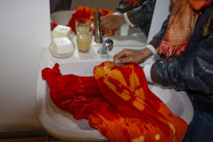
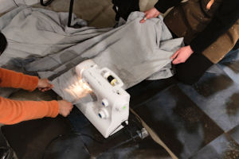
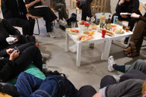
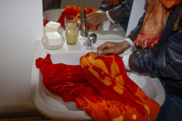
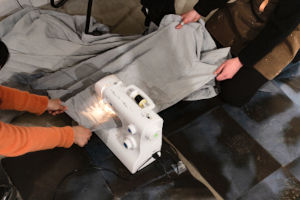
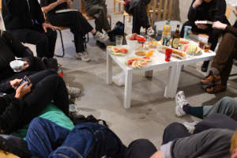

26-29 MARS/MARCH 2024, 18H-23H Rue Claudius Ravachol Saint-Étienne 42000.



  
  
"Étudiantes, ancienne étudiante et artistes, nous organisons un workshop ce mardi, mercredi et jeudi, de 18h-23h au foyer de l’ESADSE, vous êtes les bienvenues. Ce temps de travail rassemble deux workshops; "Briser l’Omerta, Will you break the silence with me?" et "Contre Couture". L’objectif est d’écrire, de fabriquer des bannières et autres formes pour la lutte contre les discriminations racistes, validistes, misogynes, queerphobe et autres dans le milieu de l’art et la société. Nous promouvont des esthétiques libres et engagées et souhaitons faire vivre une histoire effacée dans laquelle les pratiques artisanales et ornementales trouvent une valeur autrement qu’en étant simplement actées par des hommes. Nous joindrons pour ce workshop deux artistes stéphanoises Fédérica De Ruvo céramiste et Caroline Marcellin artiste calligraphe.
Nous vous attendons dès mardi 18h au foyer pour un goûter présentation comportant de la pastèque, un symbole de résistance face au génocide a Gaza et pour débuter les workshops."
Nous vous attendons dès mardi 18h au foyer pour un goûter présentation comportant de la pastèque, un symbole de résistance face au génocide a Gaza et pour débuter les workshops."
"Students, alumnis and artists, we organize a workshop on tuesday, wednesday and thursday, from 6pm to 11pm in the students room. This space will welcome two workshops : Briser l’omerta, will you break the silence with me ? And Counter-Couture. The goal is to produce text, writings, images and Drapperies and banners and other forms. And to advocate for gender equality, an engagement towards less racism, queerphobia, ableism and other forms of discrimination in both the artworld and society as a whole. But also recognize an erased counter-history in which ornemental and artisanal practices are not valued when only performed by men.
Two stephanese artists, Federica de Ruvo, a ceramist, and Caroline Marcellin, Calligraphy artist, will engage with us in this workshop.
We invite you all, regardless of the language you speak to join us on tuesday at the students room at 6pm to enjoy watermelons, symbol of a resistance against genocide and to begin the workshops."
We invite you all, regardless of the language you speak to join us on tuesday at the students room at 6pm to enjoy watermelons, symbol of a resistance against genocide and to begin the workshops."